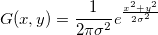

ガウスフィルタは、ガウス関数を使って画像を滑らかにしたり、ぼかしたりします。

出力結果は、隣り合うピクセルの加重平均に似ていて、境界周辺の重みより中央の重み付けが大きくなります。この関数を使用するには、
この関数の詳細については、OriginのXファンクションヘルプファイルにあるXファンクション「imgGaussian」をご覧下さい。これはコマンドウィンドウで次のように入力すると直接表示することができます。